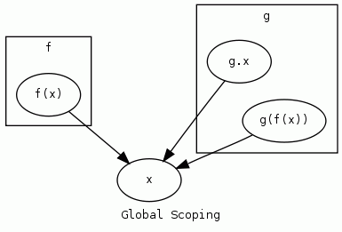

Programming Language Model
State Assumptions
- A defect is an instruction/data interaction the full effects of which are not well-defined by the language or perfectly controlled by the application.
- Software is written by humans.
- Humans are imperfect.
- Therefore, all software contains defects.
- The likelihood that
- Most if not all defects are diagnosable given the proper information.
- It is possible to define a general framework for describing a programming language.
- Using this framework it would be possible to create models describing optimal, correct constructs for programming languages in general, and specific languages.
Assert
Given such a model M(L) for programming language L and a program P(L) it should be possible to detect, diagnose and fix defects.
Model Description
Let a programming language L be an interface to an abstract machine for which the following properties are well-defined:
- scoping
- type(s)
- storage
- values
- functions that modify scoping, types, storage, values and functions(*)
Such that a program P would be a directed graph of instruction calls
Consider integer arithmetic as an example of a very simple, practical programming language:
- scoping: (none)
- type: integer
- storage: one single integer
- values: literal integers
- functions: + - * /
Prerequisites
- Interface
- Part of a component exposed to the outside world
- Abstract Machine
- Need a decent definition in here
Scoping
Definition
- Consider a program P as a directed graph G(P). G(P) contains one node for each distinct component of P.
- Let us define an edge e of G(P) as a defined relationship between two components of program P.
- Let us define the complexity C(P) as the size of the set of edges E(G(P))
- Given such a model, LET US DEFINE A SCOPE as a subgraph S within G(P) such that the nodes S(n) within it may be addressed as a single unit.
A Scope is a subgraph within the graph of a program.
In the absence of scoping any component of a program may interact any other part. That is, the size of set E(G(P)) is !C(P)
The purpose of scoping is to reduce the complexity C(P) by limiting the number of allowable interactions between components.
"Controlling complexity is the essence of computer programming." -- Brian Kernighan
Note that scoping itself does not imply any one particular algorithm for determining the accessibility between scoped components; only that such a system exists.
Scoping algorithms include, but are not limited to, the following:
- Global scoping
-
Resolution via single, global namespace.

xalways resolves to the top-level symbol from any scope.Psuedocode:
resolve(symbol): if Global[symbol]: return Global[symbol] # failure error(symbol + " not found")Complexity: Θ(1). For any given symbol there is exactly one answer.
- Static/lexical scoping
-
Resolution via declaration hierarchy.

fandgare independent scopes; children of the parent scope in whichxis declared.
g.xis inaccessible to scopef
g(f(x)) == f(x) == xPsuedocode:
resolve(symbol, declContext): # check decl if declContext.declare[symbol]: return declContext.declare[symbol] # anywhere else to look? if not declContext.parent: error(symbol + " not found") # recursive parent search return resolve(symbol, declContext.parent)Complexity: Θ(n), where n is the number of total scopes.
Because the result ofresolve(symbol, declContext)is invariant a program graph may be rewritten by replacingsymbolwith the results ofresolve(symbol, declContext) - Dynamic scoping
-
Resolution via execution context.

fandgare independent scopes; children of the parent scope in whichxis declared.
f(x)==x
g(f(x))==g.xPsuedocode:
resolve(symbol, execContext): # current context if execContext.syms[symbol]: return execContext.syms[symbol] # anywhere else to look? if not execContext.parent: error(symbol + " not found") # recursive parent search return resolve(symbol, execContent.parent)Complexity: Θ(nc), where n is the number of total scopes and c is the number of references to a given scope.
Let a scoped subgraph S(G(P)) be called a Software Object.
Software Object
Informally a Software Object can be defined as an abstract collection of one or more unique Software Object components for which the accessibility by other Software Objects is defined by a scoping algorithm.
In many programming languages the fundamental Software Objects are fixed-size bit vectors representing integer, floating point or architecture-specific address types.

Type
<Scope> <Type>
Language must contain one or more well-defined types.
A well-defined type includes definition of storage and results of all operations.
Value
<Scope> <Type> <Value>
With the following requirements:
- Scope
- defined
- valid
- Type
- defined
- compatible with Value
- Value
- defined
- compatible with Type
the declaration of a constant/literal value constitutes a value "source" vs, which is the first item in a chain of one or more value states throughout the lifetime of that value.
Value ::= <Storage> | <Literal Or Constant> Let Value now refer to any object that yields a value; Storage or a Literal or Constant value
Storage
<Scope> <Type> <Identifier>
Let Storage S(Scope, Type, Identifier) be a software object that defines the following interface:
Such that read() and write() complement each other. Given:
The following always holds:
Informally, that the contents of Storage must be equivalent before and after a read and then write of itself.
- Interrupts
- Memory-mapped I/O
- libc's
errno(actually... i'm not sure if this qualifies or not...) - POSIX/UNIX's
signals
Storage declaration must...
- Scope
- defined
- valid
- Type
- defined
- compatible with Value (may be Any)
- Identifier
- be unique as defined by the scoping rules of the language
- Value
- defined
- compatible with Type
Storage thus declared must, at a minimum...
- Lifetime/Extent
- it must be possible that storage is written to at least once.
- it must be possible that storage is read from at least once.
Function(Storage out, Value in)
Abstract:
An abstraction whereby input Value(s) are transformed and written to Storage out.
"Statements" and "Procedures" that operate by "side effects" are in fact functions that where the input and output implicitly include an entire Scope.
Consider:
all such programs can be re-written as equivalent function in the following manner:
or like so:
the point is to illustrate explicitly what happens implicitly in the context of a "procedure" -- that
Move(Storage dst, Value src)
Overwrite contents of storage dst with value src The most fundamental function.
Abstract
- type compatibility
- if src is storage, it must have been previously written to.
-
dst should not already contain src value if it is not possible for dst to contain anything other than the value being written to it. consider:
a := b a := bnote that it is the combination of storage location AND value, not just storage that is important. consider:
a := b b := anote that there are many cases where this can appear to happen, but does not, because what is being read/written is not Storage because it does not meet the requirements for storage
- C's
volatile. 'src' may be memory-mapped i/o or something similar - threaded code. research possibilities.
Exceptions
- debouncing
- purpose of copy is to introduce a small delay to allow circuit to settle (microcontroller-style)
- C's
hmm, let's think about control flow. how do we move between ... hmm we haven't really defined an abstraction for dealing with expressions/statements Branch(Location loc) foo: goto foo; /* C */ 0xeb 0xfe /* x86 machine code */ Test(Storage dst, Comparison cmp, Value a, Value b) FIXME: hmm, is this really fundamental? Do we want to define functions, in the abstract, mathematical sense? If I do, I think the whole thing might fall into the lambda calculus area... which is nice and all, but not where I want to go. Brainstorm way ahead: function must have exactly one entry point function must have exactly one exit pointReference:
- Thompson, Ken, Reflections on Trusting Trust [1984]
- Collins, Michael, Formal Methods [1998]
- Fleck, Arthur C., Formal Methods in Software Engineering
- Slonneger, Ken, Syntax and Semantics of Programming Language
- Rewriting Homepage
- Graph rewriting
- Scoping
- Big O notation
- Graph (data structure)
- Graph theory
- Glossary of graph theory
- Formal semantic of programming languages
- Structured programming
- Function_(mathematics)
- Domain_(mathematics)
- Codomain
- Category_theory
- Type_theory
- Programming_language_theory
- Type_system
- Turing_machine